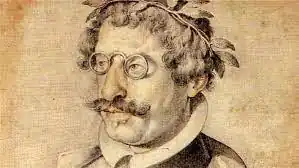

Народився 14 вересня 1580 в Мадриді в аристократичній кастильській іспанській родині, що походила з Кантабрію. Його батько Франциско Гомес де Кеведо був секретарем Марії Іспанської, а мати, уроджена Марія де Сантібаньєс, була фрейліною королеви.
З дитинства талановитий Кеведо ріс в обстановці розкоші королівських дворів, але у віці шести років Кеведо осиротів і став слухачем Імперської школи, керованої єзуїтами. Потім у 1596—1600 роках Кеведо пройшов курс навчання в університеті Алькала-де-Енарес. За власним бажанням, Кеведо самостійно вивчив основи філософії, класичні мови, а також арабську, іврит, французьку та італійську мови.
Дружив із Лопе де Вегою та Сервантесом. Багато років служив секретарем неаполітанського віце-короля, герцога Осуни. За його дорученням брав участь у дипломатичних операціях, які мали призвести до іспанської окупації Ніцци та Венеції. Після падіння герцога Лерми в 1620 Кеведо зачинився у своєму маєтку. Повернувся до двору 1623 року, став секретарем короля Філіпа IV. У 1639 році за сатиричні вірші був заарештований і ув'язнений, де провів чотири роки. Вийшов звідти зовсім хворим і невдовзі помер 8 вересня 1645 в Вильянуэві-де-лос-Инфантес.